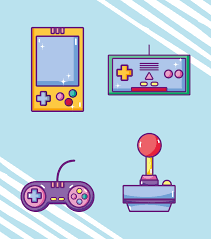

MIS ESTUDIOS
Mis estudios secundarios fueron en la E.E.T. n°460 GUILLERMO LEHMANN . Me recibí en 2009 en la modalidad de INFORMÁTICA, por lo que soy TÉCNICA EN INFORMÁTICA PROFESIONAL Y PERSONAL
En 2010 comencé la carrera de DISEÑADORA DE INDUMENTARIA Y TEXTIL, en la ciudad de Paraná, y me recibí en 2013

Actualmente estoy cursando el tercer año de la licenciatura en DESARROLLO DE VIDEOJUEGOS Y ENTRETENIMIENTO DIGITAL
